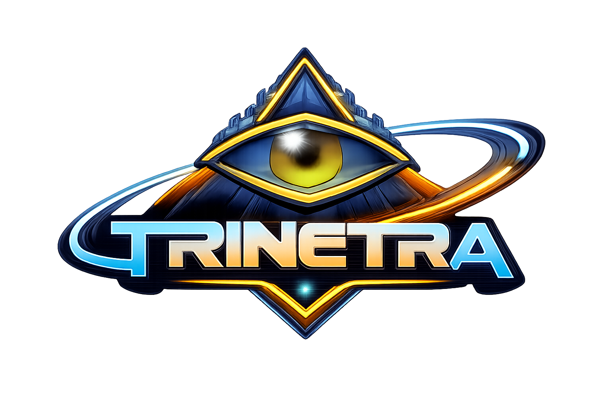
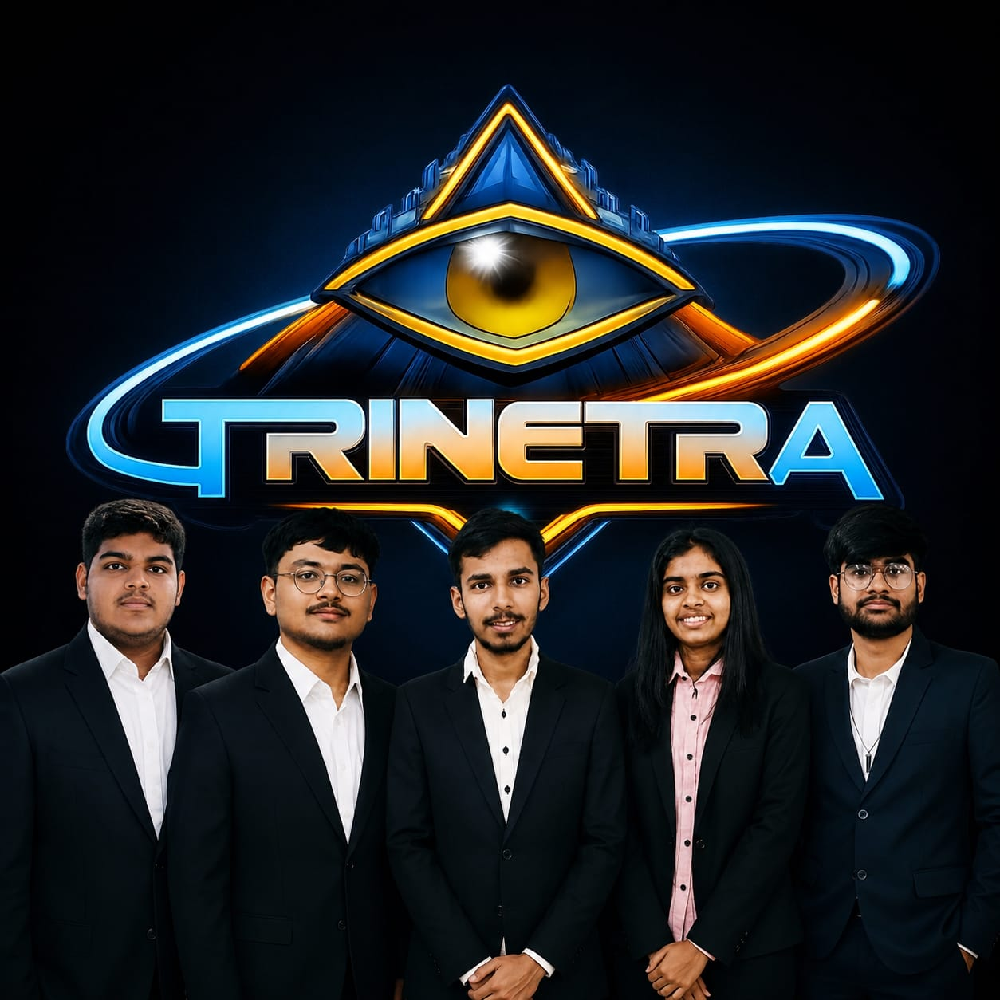
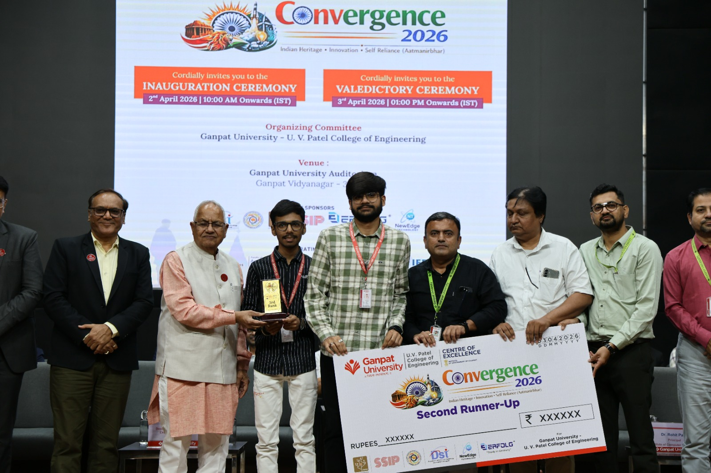
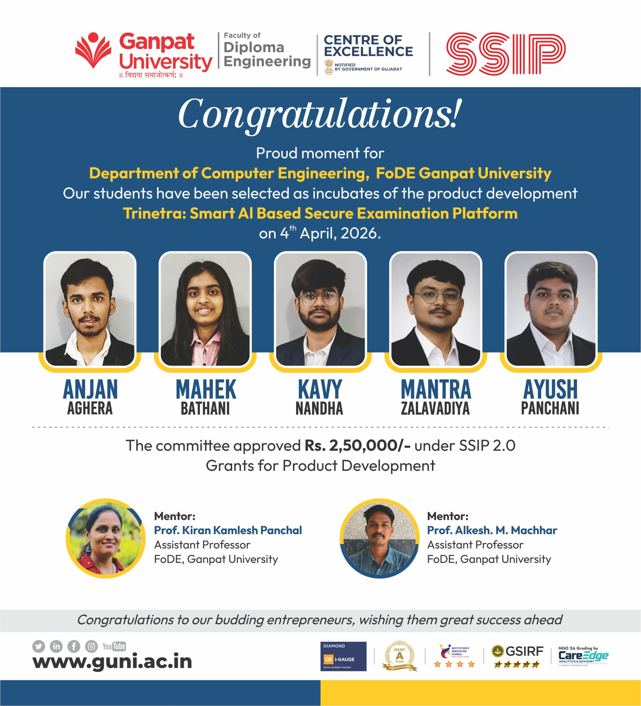
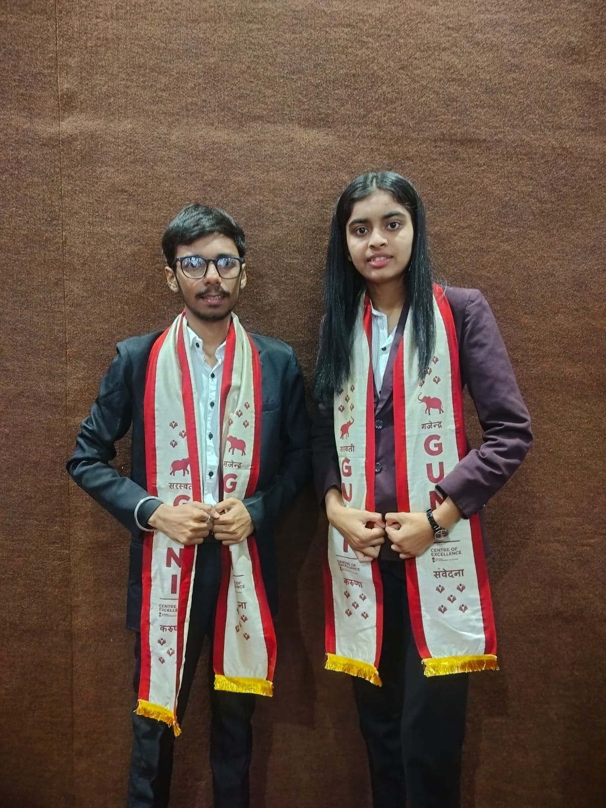
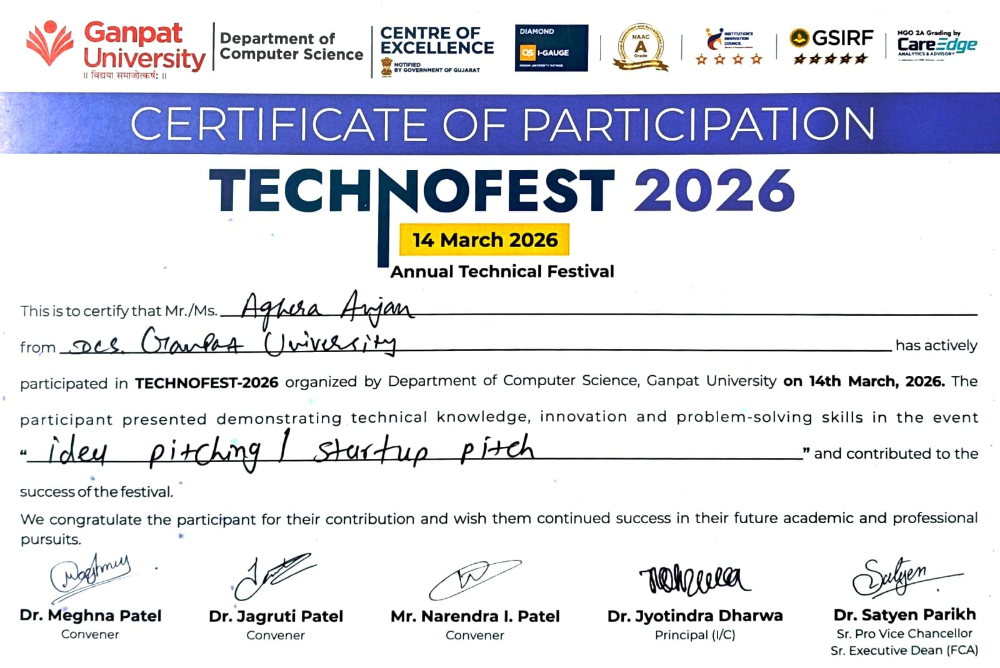
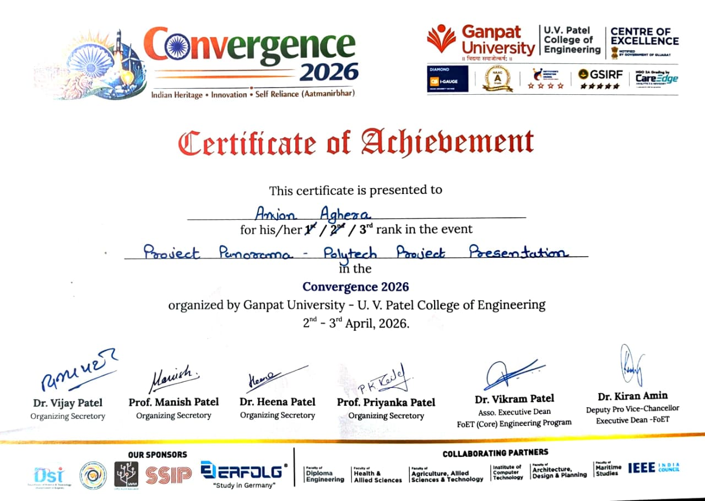
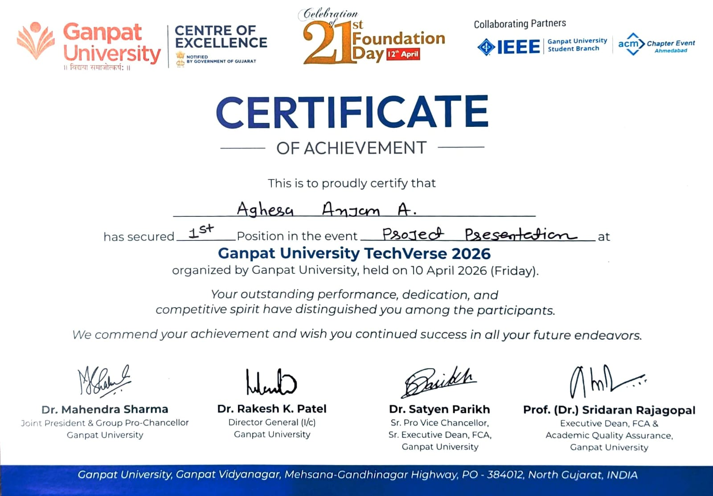
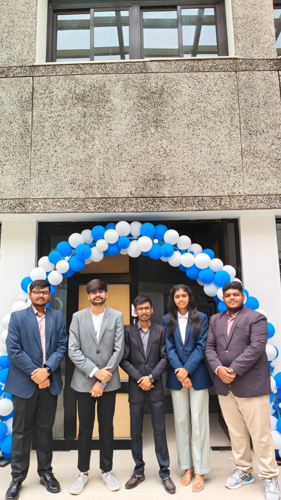
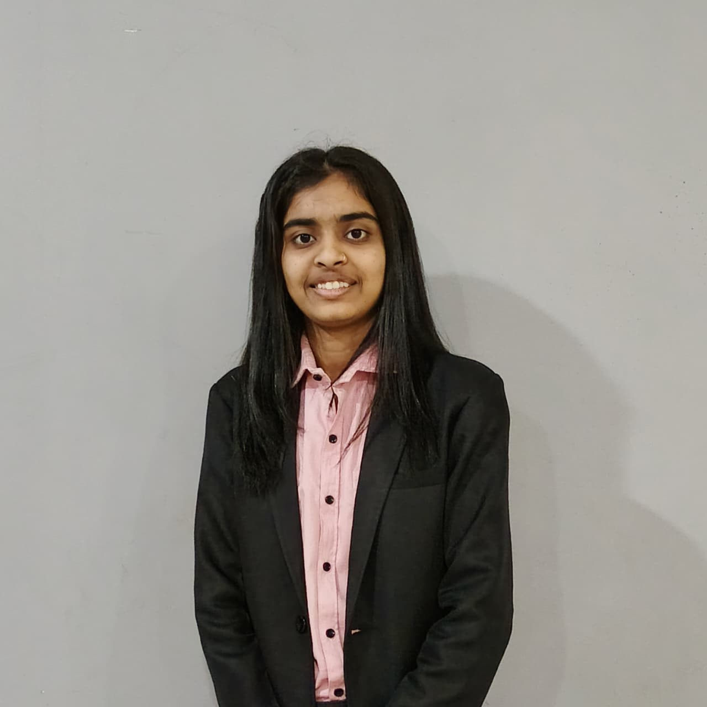

Diploma Project → Emerging Startup
From a Diploma Project to an Emerging Startup Journey
Building technology to solve real problems.
We didn't start with a product.
We started with a problem.
The Origin
The idea for Trinetra originated toward the end of the 3rd semester of Diploma, under the mentorship of Alkesh M. Machhar. The team identified real problems around online examination security, examination cheating, manual gatepass processes, and paper-based administration.
The first objective was never to build a huge product — it was to see whether a genuine, everyday problem could actually be solved through technology.
The Evolution
Under the mentorship of Alkesh M. Machhar, the team identified real-world problems that could be solved through technology.
The first Trinetra prototype was built within approximately one month — a basic screen-monitoring system aimed at addressing cheating during online examinations.
The team began testing the prototype at B. S. Patel Polytechnic, moving Trinetra beyond an academic concept into a real environment.
Testing feedback pushed the platform forward, and a second solution — the Trinetra Digital Gatepass System — was introduced.
Trinetra's first major competitive exposure — participating in Tech Fest 2026.

Trinetra achieved 3rd Rank at Convergence 2026 — a major recognition moment for the team.

Trinetra was selected under SSIP and secured a grant of ₹2,50,000 — an important transition from a student project toward a serious innovation journey.

Trinetra achieved 1st Rank at the Foundation Day of Ganpat University.

A smart examination platform designed to make online assessments more secure, organized, and reliable — its journey began with real-time screen monitoring and has evolved toward a more powerful examination-security platform.
A paperless digital gatepass system designed to replace traditional, manual gatepass processes with a faster, more organized digital workflow.
Problem → Solution
Recognition
First major competitive exposure
Convergence 2026
Student Startup & Innovation Policy
SSIP Grant
Ganpat University Foundation Day



The Grant Moment
SSIP support became an important milestone in our journey, giving Trinetra the opportunity to move beyond a student project and work toward building something with larger real-world potential.
At a Glance
Our long-term vision is to grow Trinetra into a complete Campus Management Platform — solving more real-world campus problems through technology and building an ecosystem instead of isolated solutions.
Secure Examination Platform
Digital Gatepass
More Campus Management Solutions
Complete Campus Management Platform
Current products and future vision — clearly separate, nothing here is presented as already built.
Our Story
Trinetra grew through experimentation, real-world testing, competitions, recognition, and funding — not overnight, and not alone. Every milestone came from actually building and testing, then building again.
A classroom idea can become a real-world solution when you actually build it.
The People Behind Trinetra

Database Handler
UI/UX
Founder
Co-Founder

Resource Manager